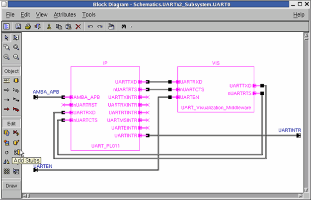
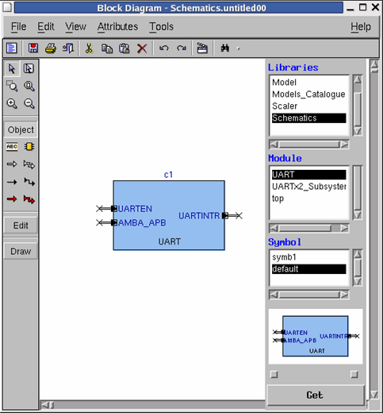

Creating Hierarchical Block Diagram's Flow
- Open a new block diagram, instantiate components normally and connect them.
- Select the appropriate components and use the Add-stub command to create the external sockets (connectors). Using the Add-stub command for a selected component will bind external sockets to any socket-pin of the component that has not already been connected. The new connectors will get the name and side (master/slave) of the component pin.
- Save the block diagram.
- Open the upper level block diagram and instantiate the lower level block diagram as you do with any other component.

Non-required connectors can be deleted, leaving some component pins open. Connector's names as well as its routings can be changed.
Figure 9‑13.
Instantiating A Block Diagram In A New Upper Level Block Diagram
